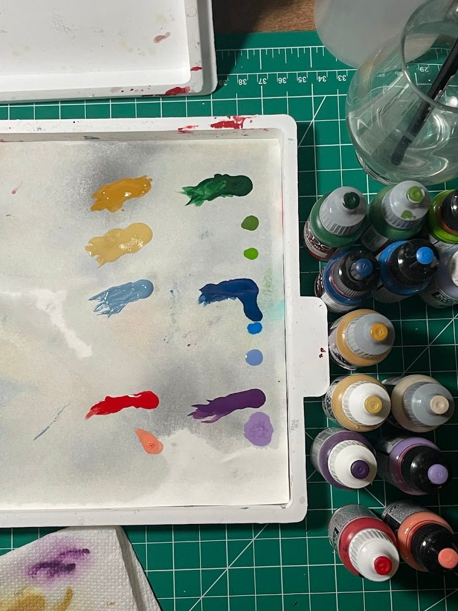
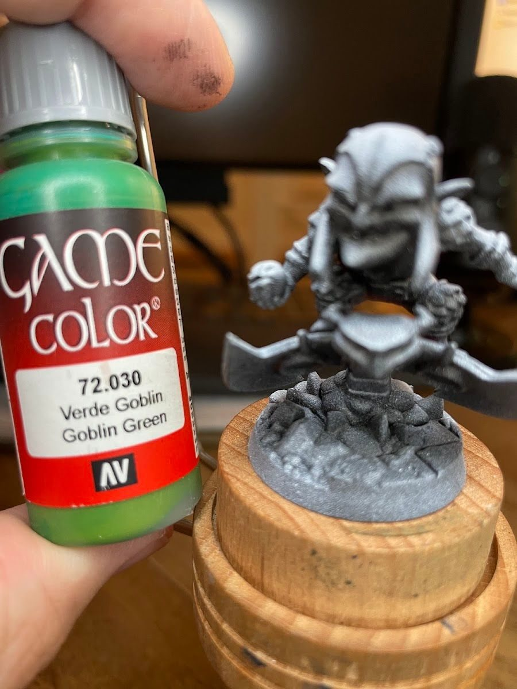

For my first 150 or so minis, my process was basically: open the paints, start slapping colors on, figure it out as I go. Then I got to Maestro (mini number 150, as it happens), a Hulk variant with a lot of colors fighting for attention, and for the first time I stopped and planned which paints I'd use before I painted.
Why this matters
Guessing on the mini is slow. You put down a highlight, it's too close to the base, you go hunting for something lighter, you find something that's the wrong temperature, and twenty minutes later you've repainted the same cape three times. Five minutes of planning up front turns all of that into a quick decision at the desk.
The short version
Before you paint, pick the paints you already own for every color on the mini and line them up in steps: base, mid, highlight (plus a shadow or wash if you want one). Swatch them on the palette next to each other. Fix any color that doesn't have a clear lighter step before you start.
How I do it
- List the color zones. Skin, main costume color, secondary color, trim or metal, hair, base.
- Pull a base for each one. This is the color you'll cover the area with.
- Find a mid and a highlight. One or two steps lighter. They don't have to be from the same range, they just have to be the same color family and clearly lighter.
- Swatch them in rows. On a wet palette or a white tile, next to each other, so you can see the jumps.
- Check the jumps. If two steps look almost the same, swap one. If a jump is huge, add something in between or plan to mix.
- Line up the bottles in order. Then you're just working left to right.

Holding a bottle right up against the primed mini is a quick gut check too. It tells you fast whether a color is going to look right at that scale.

Small shifts go a long way: the turtles
Planning also helps you make deliberate choices instead of default ones. For my TMNT turtles, all four started from the same base (Vallejo Model Color Refractive Green), then I highlighted each one differently:
- Leo: Scorpy Green (Game Color)
- Don: Dirty Grey (Game Color)
- Raph: Light Green (Model Color)
- Mikey: Emerald (Model Color)
Same base, four different highlights, and each turtle reads as his own character.

Do I still do this?
The habit stuck. I still plan things out a lot. But sometimes I just paint for fun and figure it out as I go, and that's fine too. I don't get hung up on following exactly the same process every time.
Tradeoffs
- Planning takes time on small minis. For a one-color mini or a quick grunt, just dive in.
- Plans change. If a highlight looks wrong on the actual mini, swap it.
- Big squads benefit most. Plan once, paint the whole team the same way.
Checklist
- List every color zone on the mini
- Pick base, mid and highlight for each from paints you own
- Swatch them in rows and check the jumps
- Line up the bottles in order
- Note any gaps to mix or buy
Next: if the planning keeps showing you the same gaps, those are exactly the next paints worth buying.